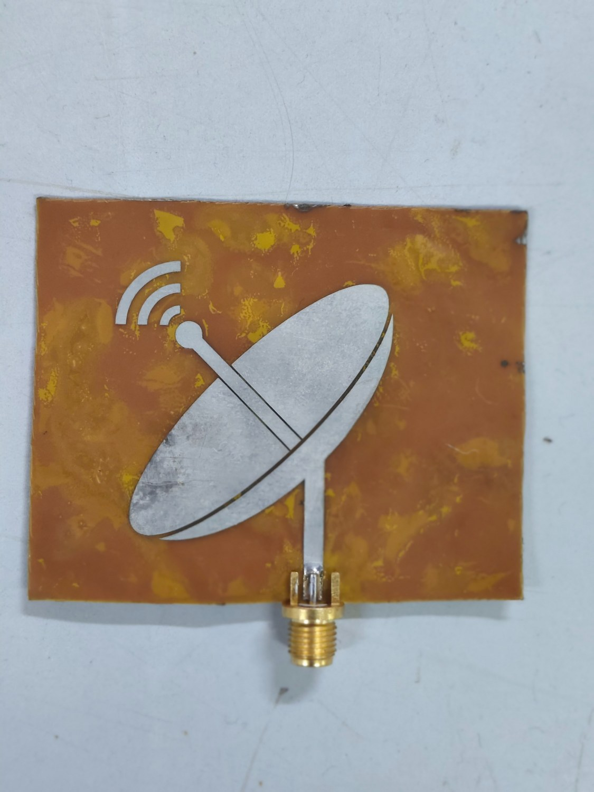
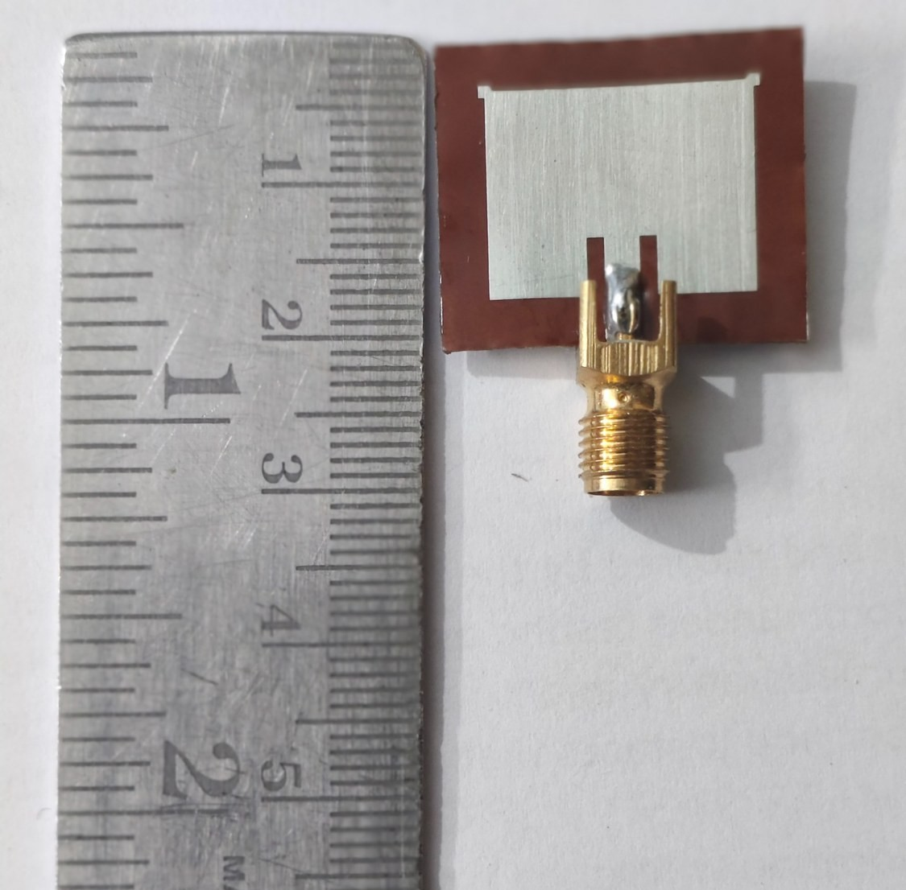

UAV · FLEXIBLE ANTENNA
Flexible dual-band dish antenna
Polyimide-based printed antenna prototype intended for UAV control and payload telemetry applications.
View technical details ↗A visual record of selected antenna prototypes and development work. Project descriptions will expand as approved project documentation becomes available.

Polyimide-based printed antenna prototype intended for UAV control and payload telemetry applications.
View technical details ↗
Compact flexible patch design for UAV video communication research.
View technical details ↗
Four-resonance printed antenna geometry for UAV connectivity research.
View technical details ↗